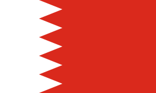
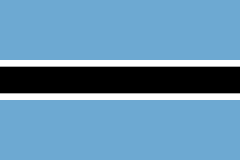

Nationbox 1 (A-M)
Explore country names, capitals, famous foods, and population data.
[A-11] • [B-17] • [C-17] • [D-4] • [E-8] • [F-5] • [G-11] • [H-3] • [I-8] • [J-3] • [K-6] • [L-9] • [M-18]
A - 11
| Country | Capital | Famous Food | Population | Official Language |
|---|
| Afghanistan | Kabul | Kabuli Palaw | ~40M | Dari, Pashto |
| Albania | Tirana | Byrek | ~2.9M | Albanian |
 Algeria Algeria | Algiers | Couscous | ~43M | Arabic, Berber |
 Andorra Andorra | Andorra la Vella | Trinxat | ~79,000 | Catalan |
 Angola Angola | Luanda | Moamba de Galinha | ~32M | Portuguese |
 Antigua & Barbuda Antigua & Barbuda | St. John's | Fungee | ~97,000 | English |
| Argentina | Buenos Aires | Asado | ~45M | Spanish |
| Armenia | Yerevan | Khorovats | ~3M | Armenian |
 Australia Australia | Canberra | Vegemite | ~26M | English |
| Austria | Vienna | Wiener Schnitzel | ~9M | German |
| Azerbaijan | Baku | Kebabs | ~10M | Azerbaijani |
B - 17
| Country | Capital | Famous Food | Population | Official Language |
|---|
 Bahamas Bahamas | Nassau | Cracked Conch | ~400,000 | English |
|  Bahrain | Manama | Machboos | ~1.7M | Arabic |
 Bangladesh Bangladesh | Dhaka | Kacchi Biryani | ~166M | Bengali |
 Barbados Barbados | Bridgetown | Flying Fish | ~287,000 | English |
 Belarus Belarus | Minsk | Draniki | ~9.5M | Belarusian, Russian |
 Belgium Belgium | Brussels | Waffles | ~11.5M | Dutch, French |
 Belize Belize | Belmopan | Rice & Beans | ~400,000 | English |
 Benin Benin | Porto-Novo | Akara | ~12M | French |
 Bhutan Bhutan | Thimphu | Ema Datshi | ~800,000 | Dzongkha |
 Bolivia Bolivia | Sucre | Sillpancho | ~12M | Spanish, Quechua |
 Bosnia Bosnia | Sarajevo | Cevapi | ~3M | Bosnian, Serbian |
|  Botswana | Gaborone | Seswaa | ~2.4M | English, Setswana |
 Brazil Brazil | Brasília | Feijoada | ~213M | Portuguese |
 Brunei Brunei | Bandar Seri Begawan | Ambuyat | ~450,000 | Malay |
 Bulgaria Bulgaria | Sofia | Banitsa | ~7M | Bulgarian |
| Burkina Faso | Ouagadougou | Riz Gras | ~21M | French |
 Burundi Burundi | Bujumbura | Isombe | ~11M | Kirundi |
C - 17
| Country | Capital | Famous Food | Population | Official Language |
|---|
 Cape Verde Cape Verde | Praia | Cachupa | ~500,000 | Portuguese |
 Cambodia Cambodia | Phnom Penh | Amok | ~16M | Khmer |
 Cameroon Cameroon | Yaoundé | Ndole | ~27M | French, English |
| Canada | Ottawa | Poutine | ~38M | English, French |
 Central African Republic Central African Republic | Bangui | Goat Stew | ~5M | French, Sango |
| Chad | N'Djamena | Chad Chicken | ~17M | French, Arabic |
 Chile Chile | Santiago | Empanadas | ~18M | Spanish |
 China China | Beijing | Peking Duck | ~1.4B | Mandarin |
 Colombia Colombia | Bogotá | Arepas | ~52M | Spanish |
| Comoros | Moroni | Langouste | ~800,000 | Arabic, French |
| Congo | Brazzaville | Moambe | ~4.5M | French |
 Congo (DRC) Congo (DRC) | Kinshasa | Moambe | ~100M | French |
| Costa Rica | San José | Gallo Pinto | ~5M | Spanish |
 Croatia Croatia | Zagreb | Pasticada | ~4M | Croatian |
 Cuba Cuba | Havana | Ropa Vieja | ~11M | Spanish |
| Cyprus | Nicosia | Souvlaki | ~1.2M | Greek, Turkish |
| Czech Republic | Prague | Svíčková | ~10M | Czech |
D - 4
| Country | Capital | Famous Food | Population | Official Language |
|---|
| Denmark | Copenhagen | Smorrebrod | ~6M | Danish |
| Djibouti | Djibouti | Skoudehkaris | ~1.2M | French, Arabic |
| Dominica | Roseau | Mountain Chicken | ~66,000 | English |
 Dominican Republic Dominican Republic | Santo Domingo | La Bandera | ~11.5M | Spanish |
E - 8
| Country | Capital | Famous Food | Population | Official Language |
|---|
 Ecuador Ecuador | Quito | Ceviche | ~18.3M | Spanish |
 Egypt Egypt | Cairo | Koshari | ~118.4M | Arabic |
 El Salvador El Salvador | San Salvador | Pupusa | ~6.4M | Spanish |
 Equatorial Guinea Equatorial Guinea | Malabo | Succotash | ~1.9M | Spanish, French |
 Eritrea Eritrea | Asmara | Zigni | ~3.6M | Tigrinya, Arabic |
| Estonia | Tallinn | Verivorst | ~1.3M | Estonian |
 Eswatini Eswatini | Mbabane | Sishwala | ~1.3M | English, Swazi |
 Ethiopia Ethiopia | Addis Ababa | Injera | ~135.5M | Amharic |
F - 5
| Country | Capital | Famous Food | Population | Official Language |
|---|
| Fiji | Suva | Kokoda | ~933,000 | English, Fijian |
 Finland Finland | Helsinki | Karjalanpiirakka | ~5.6M | Finnish |
 France France | Paris | Baguette | ~66.6M | French |
 French Guiana French Guiana | Cayenne | Meat Stew | ~313,000 | French |
 French Polynesia French Polynesia | Papeete | Poisson Cru | ~281,000 | French |
G - 11
| Country | Capital | Famous Food | Population | Official Language |
|---|
 Gabon Gabon | Libreville | Nyembwe Chicken | ~2.6M | French |
| Gambia | Banjul | Domoda | ~2.8M | English |
| Georgia | Tbilisi | Khachapuri | ~3.8M | Georgian |
| Germany | Berlin | Bratwurst | ~84M | German |
 Ghana Ghana | Accra | Jollof Rice | ~35M | English |
 Greece Greece | Athens | Moussaka | ~9.9M | Greek |
| Grenada | St. George's | Oil Down | ~117,000 | English |
| Guatemala | Guatemala City | Pepian | ~18.7M | Spanish |
 Guinea Guinea | Conakry | Poulet Yassa | ~15.1M | French |
 Guinea-Bissau Guinea-Bissau | Bissau | Caldo Stew | ~2.2M | Portuguese |
 Guyana Guyana | Georgetown | Pepperpot | ~836,000 | English |
H - 3
| Country | Capital | Famous Food | Population | Official Language |
|---|
| Haiti | Port-au-Prince | Griot | ~11.9M | French, Creole |
 Honduras Honduras | Tegucigalpa | Baleada | ~11M | Spanish |
 Hungary Hungary | Budapest | Goulash | ~9.6M | Hungarian |
I - 8
| Country | Capital | Famous Food | Population | Official Language |
|---|
| Iceland | Reykjavik | Hákarl | ~398,000 | Icelandic |
 India India | New Delhi | Rice & Curry | ~1.46B | Hindi, English |
| Indonesia | Jakarta | Nasi Goreng | ~285.7M | Indonesian |
 Iran Iran | Tehran | Chelo Kebab | ~92.4M | Persian |
 Iraq Iraq | Baghdad | Masgouf | ~47M | Arabic, Kurdish |
| Ireland | Dublin | Irish Stew | ~5.3M | Irish, English |
 Israel Israel | Jerusalem | Falafel | ~9.5M | Hebrew, Arabic |
 Italy Italy | Rome | Pasta Carbonara | ~59.1M | Italian |
J - 3
| Country | Capital | Famous Food | Population | Official Language |
|---|
 Jamaica Jamaica | Kingston | Jerk Chicken | ~2.8M | English |
 Japan Japan | Tokyo | Sushi | ~123.1M | Japanese |
 Jordan Jordan | Amman | Mansaf | ~11.5M | Arabic |
K - 6
| Country | Capital | Famous Food | Population | Official Language |
|---|
| Kazakhstan | Astana | Beshbarmak | ~20.8M | Kazakh, Russian |
 Kenya Kenya | Nairobi | Nyama Choma | ~57.5M | English, Swahili |
| Kiribati | Tarawa | Palusami | ~136,000 | English |
 Kuwait Kuwait | Kuwait City | Machboos | ~5M | Arabic |
| Kyrgyzstan | Bishkek | Beshbarmak | ~7.3M | Kyrgyz, Russian |
| Kosovo | Pristina | Flija | ~1.6M | Albanian, Serbian |
L - 9
| Country | Capital | Famous Food | Population | Official Language |
|---|
| Laos | Vientiane | Laap | ~7.8M | Lao |
 Latvia Latvia | Riga | Grey Peas | ~1.8M | Latvian |
| Lebanon | Beirut | Kibbeh | ~5.8M | Arabic |
| Lesotho | Maseru | Motoho | ~2.3M | Sesotho, English |
 Liberia Liberia | Monrovia | Jollof Rice | ~5.7M | English |
| Libya | Tripoli | Couscous | ~7.4M | Arabic |
 Liechtenstein Liechtenstein | Vaduz | Käsknöpfle | ~40,000 | German |
| Lithuania | Vilnius | Cepelinai | ~2.8M | Lithuanian |
| Luxembourg | Luxembourg | Juddmat | ~680,000 | French, German |
M - 18
| Country | Capital | Famous Food | Population | Official Language |
|---|
 Madagascar Madagascar | Antananarivo | Romazava | ~32.7M | Malagasy, French |
 Malawi Malawi | Lilongwe | Nsima | ~22.2M | English, Chichewa |
 Malaysia Malaysia | Kuala Lumpur | Nasi Lemak | ~36M | Malay |
| Maldives | Malé | Mas Huni | ~530,000 | Dhivehi |
 Mali Mali | Bamako | Tô | ~25.2M | French |
 Malta Malta | Valletta | Fenek | ~545,000 | Maltese, English |
 Marshall Islands Marshall Islands | Majuro | Barramundi | ~36,000 | Marshallese |
 Mauritania Mauritania | Nouakchott | Thieboudienne | ~5.3M | Arabic |
 Mauritius Mauritius | Port Louis | Dholl Puri | ~1.3M | English, French |
 Mexico Mexico | Mexico City | Tacos | ~131.9M | Spanish |
| Micronesia | Palikir | Taro | ~114,000 | English |
 Moldova Moldova | Chișinău | Mămăligă | ~2.6M | Romanian |
| Monaco | Monaco | Barbagiuan | ~39,000 | French |
| Mongolia | Ulaanbaatar | Buuz | ~3.4M | Mongolian |
 Montenegro Montenegro | Podgorica | Ćevapi | ~620,000 | Montenegrin |
| Morocco | Rabat | Tagine | ~37.8M | Arabic, Berber |
| Mozambique | Maputo | Piri Piri | ~33.9M | Portuguese |
 Myanmar Myanmar | Nay Pyi Taw | Mohinga | ~55M | Burmese |
Total Countries in this list: 120
Top economically strong nations are highlighted in red. Visit Nationbox 2 for N-Z.